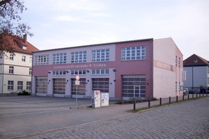
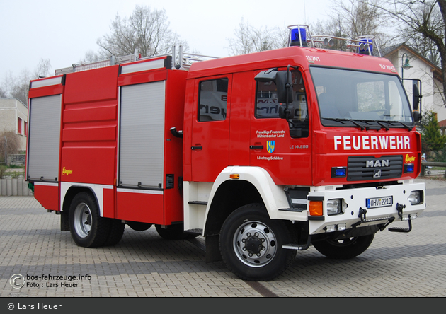
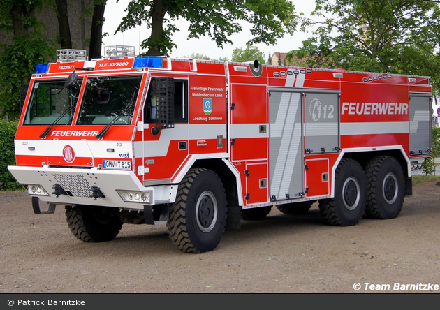
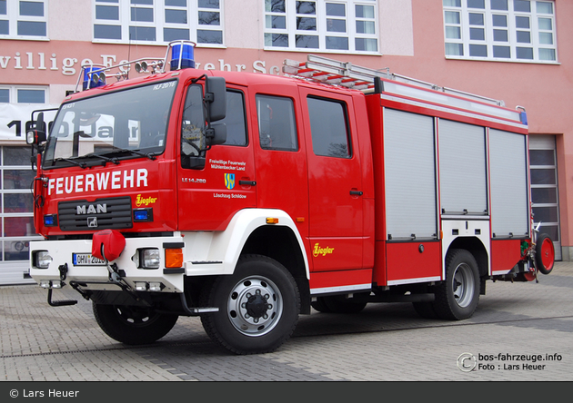
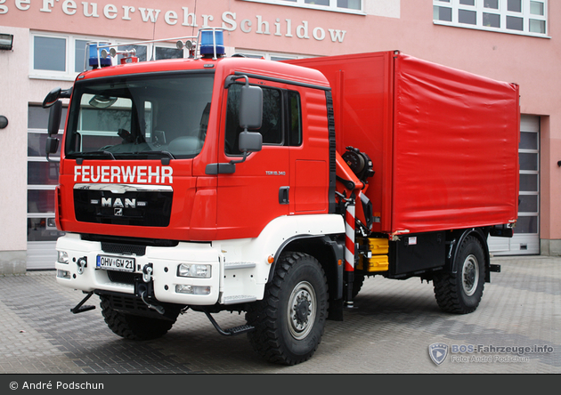

LZ-Schildow
Löschzug Schildow

Zugführer:
Herr Gunnar Prütz
Gegründet: 1908
Einsatzabteilung: k.A.
Jugendabteilung: k.A.
Fahrzeuge
TLF-20/43 W (Florian Oberhavel 15/24-01)TLF 30/90 (Florian Oberhavel 15/25-1)
HLF 20/16 (Florian Oberhavel 15/43-1)
DLAK 23/12 CS (Florian Oberhavel 15/33-01)
GW-L2 (Florian Oberhavel 15/59-1)
TLF-20/43 W
Tanklöschfahrzeug (TLF-20/43 W) der FF Schildow,
Mühlenbecker Land
Fahrgestell: MAN LE 14.280 BB
Aufbau: Ziegler Giengen
Baujahr: 2005

TLF 30/90
Tanklöschfahrzeug (TLF 30/90) der FF Schildow,
Mühlenbecker Land
Fahrgestell: Tatra T815-7 V8 6x6
Aufbau: Thoma-WISS
Baujahr: 2015

HLF 20/16
Hilfeleistungslöschfahrzeug (HLF 20/16) der FF Schildow,
Mühlenbecker Land
Fahrgestell: MAN LE 13.280 BB
Aufbau: Ziegler Giengen
Baujahr: 2006

DLAK 23/12 CS
Drehleiter mit Korb (DLAK 23/12 CS) der FF Schildow,
Mühlenbecker Land
Fahrgestell: Iveco FF 160 E 30
Aufbau: Magirus Brandschutztechnik GmbH Ulm/Donau
Baujahr: 2009

GW-L2
Gerätewagen Logistik 2 (GW-L2) der FF Schildow,
Mühlenbecker Land
Fahrgestell: TGM 18.340 4x4 BB
Aufbau: FA-KA ZerbstFA-KA Zerbst
Baujahr: 2010
